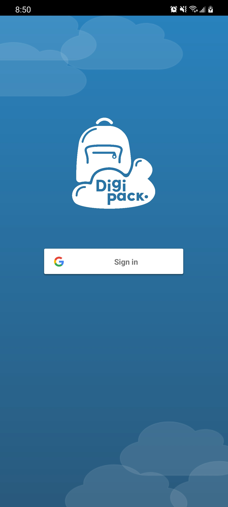
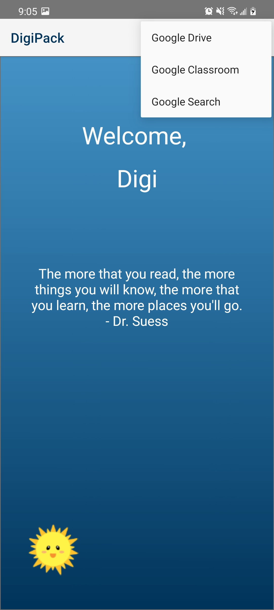
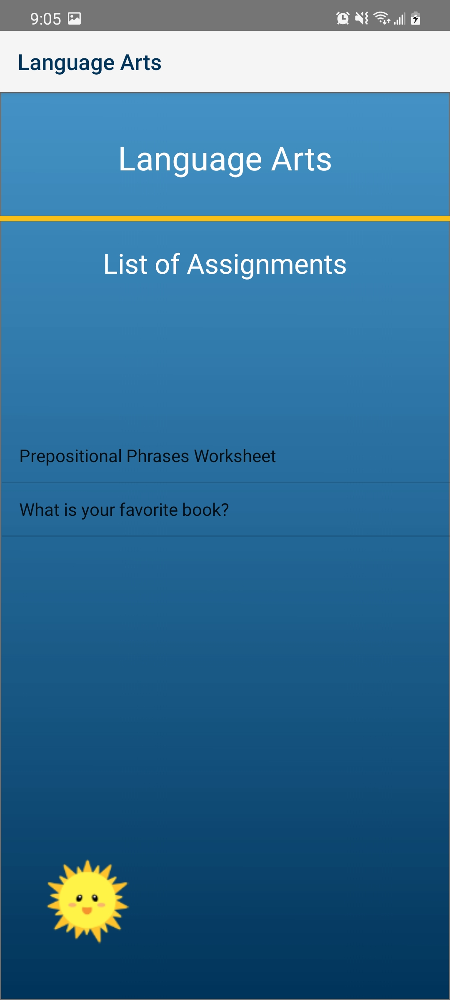
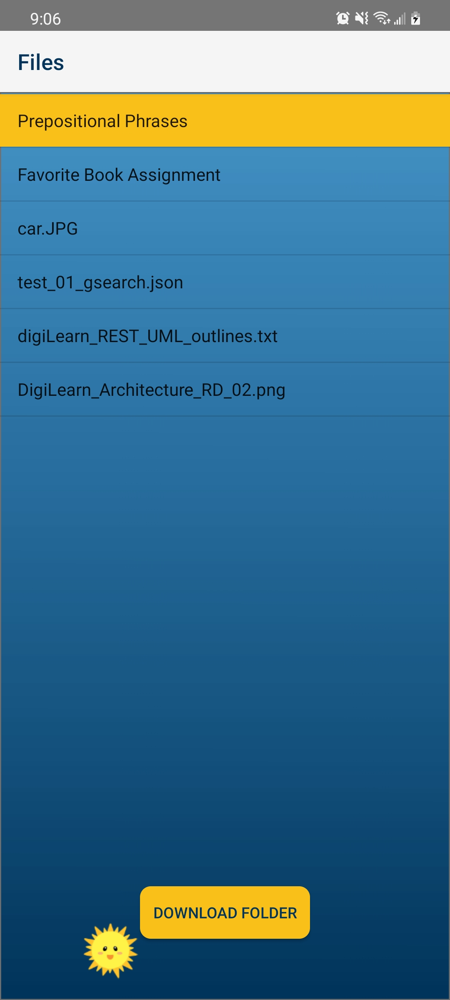

Easy Access to Crucial Materials
At the heart of the Digital Backpack is an innovation on network
architecture; the DigiPack provides an opportunistic Content Delivery
Network, or oCDN, for educational materials. This oCDN, made possible
by the DigiPack proxy server, provides easy-access to essential
scholastic materials.
The DigiPack relies on Google's API to provide access to materials
stored on a student's Google Drive, assignments found in Google
Classroom, and even materials from the wider web through Google
Search. As such, signing up the the Digital Backpack is as easy as
signing in with your Google account.
Once signed in, active internet is no longer required for the DigiPack
to function. Whenever a connection is available, the DigiPack will
automatically contact the proxy server to download the latest materials
which are then cached locally for offline use.




Tools to Keep Connected
The DigiPack provides a suite of tools for engaging with remote
education easily. Even while offline, students can engage with
educational materials and even submit assignments or perform internet
research. As soon as internet is available, all of these tasks will
be automatically completed.
The Google Classroom interface keeps students up-to-date on important
information from all of their classes. The DigiPack automatically keeps
up-to-date with announcements, assignments, and due dates. From here,
students can submit their coursework worry-free.
The Google Drive interface makes it easy to keep files organized.
Students can request documents for download, make changes locally,
and rely on the DigiPack to push those changes back to the internet
when possible.
The Google Search interface allows students to gather more resources.
A simple Google Search returns results which can be viewed offline
at the student's convenience.
Requirements
The Digital Backpack required many developments to become a whole.
First and foremost a Linux-based proxy server that integrates with Google Classroom API’s
and Google Search. It also manages necessary Oath credentials that are required for a
user’s “account/identity” to access Google Classroom services and provides a REST API.
Along with that, the Digital Backpack also requires a mobile app that automatically uploads
assignments, posts, and queries as well as download new content when the mobile device establishes
Internet connectivity. The mobile app should also display content delivered from the DigiPack
proxy server when the user is offline.
This high-level description of the purpose of the Digital Backpack served
as the basis through which we continued the requirements-gathering process.
From here, we developed a series of user stories that illustrated the needs
of various user-types and how the Digital Backpack would satisfy those needs.
Those user stories were then further refined into the domain-level
requirements to the right.
These domain-level requirements where then further defined with more
granular functional and performance requirements. For a complete overview
of the requirements specifications for this project, please refer to our
Requirements Specification document.
Domain-Level
- The Digital Backpack will aid remote education.
- The Digital Backpack will provide seamless transitions
between online and offline functionality.
- The Digital Backpack will utilize oCDN functionality in order
to facilitate asynchronous connections and provide a delay-tolerant network.
- The Digital Backpack will support three types of end users:
students, teachers, and parents.
- The Digital Backpack will be highly accessible in both design
and device requirements in order to accommodate a wide range of users.
- The Digital Backpack will securely handle all sensitive
personal and scholastic user data to prevent unauthorized access.
These requirements became the foundation for the DigiPack app for Android
and on the web.